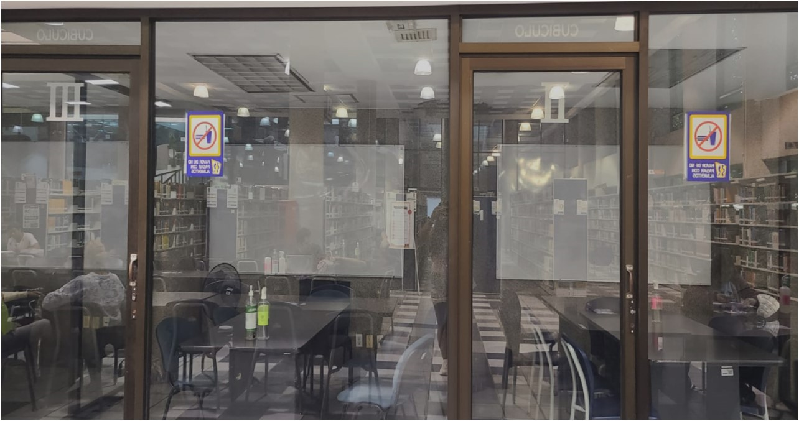
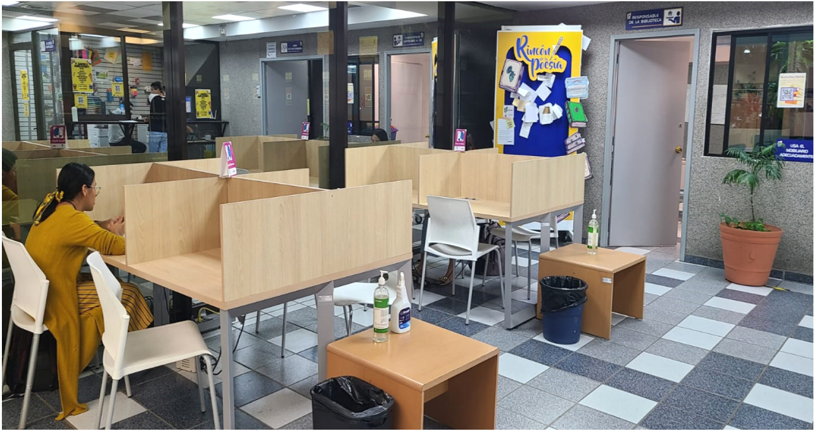
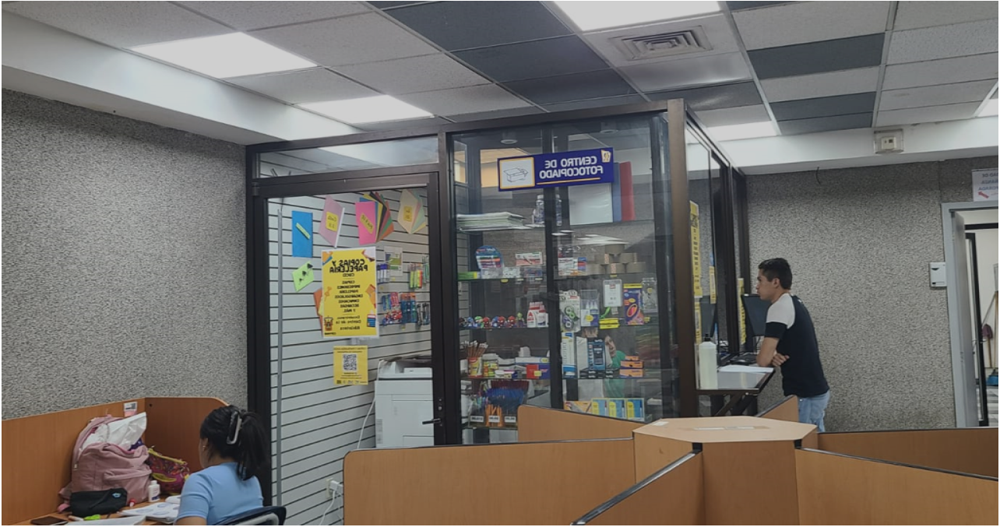

Ubicación y Horarios
Ubicación:
Se encuentra ubicada frente al estacionamiento. Si entramos por Bulevard encontraremos el edificio.
Horarios:
Ingreso
Únicamente es necesario escribir tu código. Se le pide al alumno las reglas básicas de convivencia: No hablar, no fumar, mantener el orden y cuidar tanto el material como las instalaciones.
¿Qué servicios Brinda?
La biblioteca cuenta con el servicio de préstamos de libros y computadoras, además de consultas (libros, comics, tesis).
Préstamos:
Credencial vigente. De ser de primer ingreso, es necesario presentar tu cédula. En caso de extraviar la credencial, se pide el comprobante de reposición. Se toma nota del estado del libro, de regresar dañado se solicita una reposición.
Cubículos
Cubículos grupales:
Ideal para trabajos grupales. Cuenta con pizarrón y mejor internet. Se necesitan de 4 a 6 personas, todas con credencial vigente.

Cubículos Individuales:
Con conectores para tu máquina, los cubículos individuales que se encuentran junto al centro de fotocopiado.

Centro de fotocopiado
Cuenta con impresora donde, con las computadoras aledañas, puedes enviar tus archivos. Igualmente cuenta con venta de útiles escolares y básicos.

Servicios en línea e Informes
Teléfono (33)13785900 ext. 27489
Correo: ubiblio@cucei.udg.mx
Síguelos en Facebook: www.facebook.com/CIDCUCEI.
Instalaciones